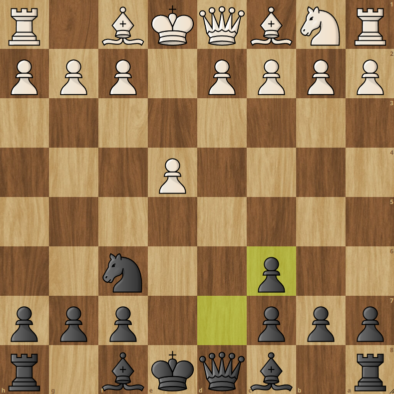

Below is a graph of all of the openings that I have played on this website. My most played opening is the Stafford Gambit. This is my most played opening and I have a 63% winrate with this opening because it is my most studied opening. I don't have much opening theory memorized for positions outside of the Stafford Gambit. That is a problem because I only got the Stafford Gambit in 43 of 740 games which is roughly 0.058% of games. (30% of my tournament games were Stafford Gambit and I have a 100% winrate with it, I only played 10 tournament games) This shows that if I had opening preparation for other common openings my winrate would skyrocket as coming into the midgame with a positional or material advantage is invaluable. It shows another weakness which is another reason to be hardstuck in my elo.
This right here is what I live for. I love the Stafford Gambit. This is one of the most interesting and agressive chess openings possible for black. It sacrifices a pawn on the second move for quick development and active piece play. There are so many moves that seem like they are normal development moves that are just blunders. For example, 5. d3 Bc5 6. Bg5 Nxe4 7. Bxd8 Bxf2+ 8. Ke2 Bg4# Another example that is 5. e5 Ne4 6.d3 Bc5 7. dxe4 Bf2+ 8. Kxf2 Qxd1 These and many other lines can come about from such a goated opening. I guess I should say that the opening is objectivly slightly bad for black with perfect play but I do not engage in perfect play.
If you want to learn some traps in this opening line